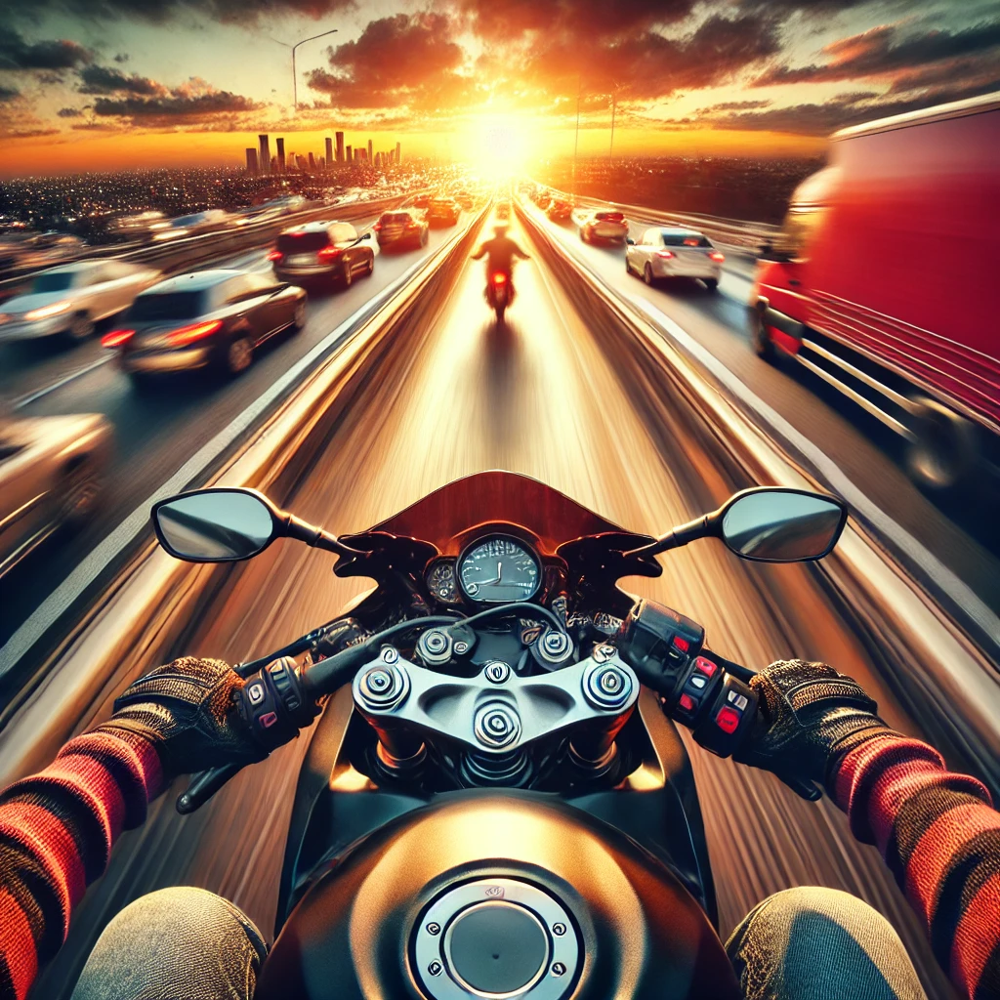

Traffic Rider: A Thrilling Ride to Fun and Adventure!
When it comes to mobile gaming, there’s one title that has captured the hearts of gamers worldwide: Traffic Rider. If you’ve ever dreamt of speeding through busy streets on a high-performance motorbike, weaving through traffic like a pro, and feeling the rush of the wind in your face (virtually, of course), then Traffic Rider is the game for you! This first-person motorbike racing game offers a unique and addictive experience that keeps players coming back for more.
The Perfect Blend of Speed and Strategy
Traffic Rider is not just a game—it’s an experience. With its realistic graphics, smooth controls, and immersive gameplay, it’s no wonder the game has become a fan favorite. You start off with a modest motorbike, but as you earn more points by completing missions or cruising through endless rides, you unlock better and faster bikes. Trust me, upgrading to a superbike feels like going from a tricycle to a jet engine on wheels!
The game is simple enough to understand, yet challenging enough to keep you hooked. The goal is straightforward: ride as fast as you can while avoiding collisions with other vehicles. But here’s the twist—you can score extra points by overtaking cars closely (without kissing their bumpers) or riding at night. Sounds easy? Wait until you’re dodging trucks and buses during rush hour!
Graphics That Feel Like a Virtual Getaway
One of the standout features of Traffic Rider Game is its incredible attention to detail. The graphics are so realistic that you might find yourself looking both ways before crossing the street… in the game. From the weather changes to the beautifully rendered environments, every ride feels like a mini-vacation. Whether you’re speeding through a sunlit desert highway or zipping past glowing cityscapes at night, the game makes you feel like you’re truly there.
And let’s not forget about the sound effects. The roar of the bike’s engine, the honking of cars, and even the sound of the wind—they all come together to create an immersive audio experience. If you close your eyes (not while playing, though!), you might just think you’re on a real bike.
Why the Mod Version is a Game-Changer
Alright, let’s talk about the Traffic Rider Mod version a topic that has gamers buzzing with excitement. If you’ve ever played the regular version of Traffic Rider, you’ll know that unlocking those top-tier bikes and beating challenging levels can take time. A lot of time. Enter the Mod version, where you can enjoy unlimited money, unlocked bikes, and free upgrades. It’s like getting VIP access to a concert, except the concert is a never-ending highway, and the stage is your motorbike.
Tips to Dominate Traffic Rider Like a Pro
- Stay in the Fast Lane: Riding in the middle or overtaking on the edge is where the real points are. Plus, it’s a lot more exciting!
- Upgrade Your Bike Wisely: Focus on upgrading your bike’s speed and handling first. A faster bike with good control will make missions a breeze.
- Ride in the Opposite Lane: If you’re feeling daring, riding against traffic gives you extra points. Just don’t crash, or you’ll feel like a pancake.
- Master the Art of Near Misses: Get as close as possible to other vehicles without hitting them. It’s risky, but the rewards are worth it.
A Little Humor to Keep Things Light
Let’s be real—there’s something oddly satisfying about narrowly missing a truck in Traffic Rider. It’s like being in an action movie, except you’re the stuntman who doesn’t need insurance. And don’t get me started on the moment when you finally save up enough coins to buy that dream bike. It’s like graduating from a bicycle to a rocket. You’ll find yourself thinking, “I can finally outrun my problems… at least in the game.”
But beware—once you start playing, it’s hard to stop. You’ll tell yourself, “Just one more mission,” and next thing you know, it’s 2 a.m., and you’re still trying to beat your high score. Traffic Rider is the kind of game that makes time fly faster than your motorbike.
Final Thoughts: Why You Should Play Traffic Rider
In a world filled with racing games, Traffic Rider stands out as a masterpiece that delivers an adrenaline-packed experience. Whether you’re playing the regular version or indulging in the Mod version’s perks, the game offers endless fun and excitement. Its stunning graphics, realistic gameplay, and variety of challenges make it a must-play for anyone who loves racing games.